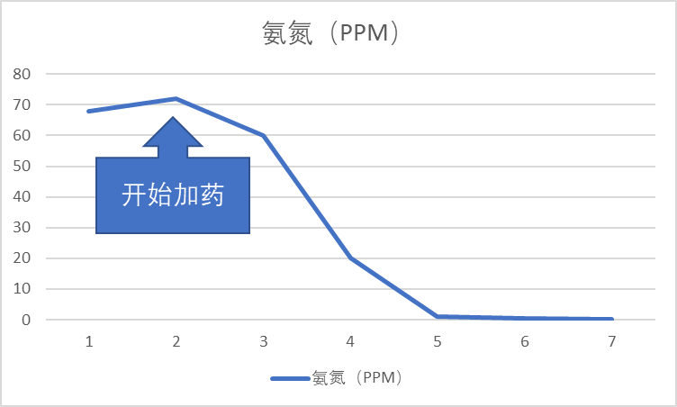
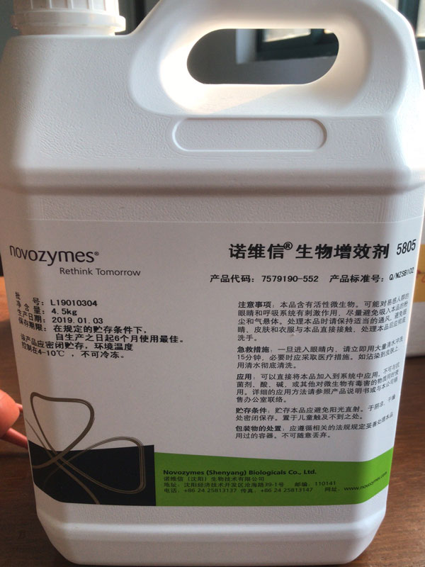

某食品废水用半点科技氨氮去除菌种（硝化细菌），4天内氨氮达标排放。某食品污水站。设计处理能力2400m³/d，出水排放达到一级标准，系统采用活性污泥工艺，在有效去除COD的同时，还能达到同步除磷的效果。废水处理工艺流程：车间废水-调节池-二沉池-好氧池-MBR-出水。

系统进出水水质数据
出水氨氮曲线图

运行总结
该食品企业污水站自投加氨氮去除菌BioRemove 5805以来，综合使用一周的运行数据来看，系统出水氨氮已经由使用前的70mg/L左右降至现在低临界值为0.1mg/L左右，这期间从70mg/L降至0.1mg/L只用了不到4天的时间，说明投加菌种后，系统的硝化能力增强，硝化速率提升，氨氮去除效率提高，生化系统的污泥性能良好。
本案例使用产品：氨氮去除菌 BioRemove 5805（硝化菌）
诺维信生物增效剂BioRemove 5805是氨氮去除菌，主要活性成份是硝化菌，可通过硝化反应脱去污水中的氨氮。它大量用于采用好氧处理来产生、维持或恢复硝化作用的多种行业。
产品特性
BioRemove 5805为功效当前更迅速、更可靠的硝化作用解决方案。利用BioRemove 5805进行生物强化处理会使硝化反应更为强大，从而使工业污水处理厂能够承受住更高负荷的有毒污水以及含有高浓度氨氮或其他氮化合物的污水。BioRemove 5805通过缩短流程受冲击之后的恢复时间和降低突然增加的负荷对出水水质的影响，从而有助于确保遵循法规。BioRemove 5805可促进持续、可靠的处理，并减少进行与硝化作用相关的操作变更的必要性。它有助于在低温情况下实现简便操作。
产品
| 项目 | 指标 |
|---|---|
| 活性成分 | 高度浓缩亚硝化单胞菌和硝化杆菌菌种 |
| 脱氮规格（行业标准） | >500毫克NH4+/千克/小时 |
| 外观 | 棕色液体 |
| 包装 | 4.5公斤 |
| 存储 | 4摄氏度冷藏 |
产品使用
产品直接投加在好氧工艺段进口端。
系统参数控制
| 条件 | 范围 | 推荐范围值 |
|---|---|---|
| 溶氧，PPM | >1 | 3 |
| pH | 6.5-9.5 | 7.5-8.5 |
| 温度，℃ | 10-40 | 25-35 |
| 碱度 | >40 | >100 |

（产品实拍图）